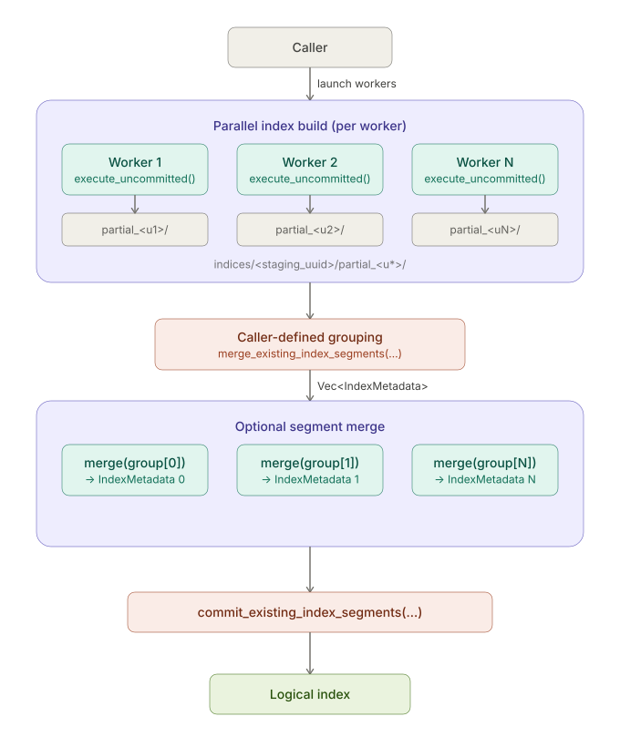

Distributed Indexing¶
Warning
Lance exposes public APIs that can be integrated into an external distributed index build workflow, but Lance itself does not provide a full distributed scheduler or end-to-end orchestration layer.
This page describes the current model, terminology, and execution flow so that callers can integrate these APIs correctly.
Overview¶
Distributed index build in Lance follows the same high-level pattern as distributed write:
- multiple workers build index data in parallel
- the caller invokes Lance segment build APIs for one distributed build
- Lance plans and builds index artifacts from the worker outputs supplied by the caller
- the built artifacts are committed into the dataset manifest
For vector indices and segment-native scalar indices, the worker outputs are
segments stored directly under indices/<segment_uuid>/. Lance can turn these
outputs into one or more physical segments and then commit them as one logical
index.

Terminology¶
This guide uses the following terms consistently:
- Segment: one worker output written by
execute_uncommitted()underindices/<segment_uuid>/ - Physical segment: one index segment that is ready to be committed into the manifest
- Logical index: the user-visible index identified by name; a logical index may contain one or more physical segments
For example, a distributed vector build may create a layout like:
indices/<segment_uuid_0>/
├── index.idx
└── auxiliary.idx
indices/<segment_uuid_1>/
├── index.idx
└── auxiliary.idx
indices/<segment_uuid_2>/
├── index.idx
└── auxiliary.idx
After segment build, Lance produces one or more segment directories:
indices/<physical_segment_uuid_0>/
├── index.idx
└── auxiliary.idx
indices/<physical_segment_uuid_1>/
├── index.idx
└── auxiliary.idx
These physical segments are then committed together as one logical index. In the common no-merge case, the input segments are already the physical segments and can be committed directly.
Roles¶
There are two parties involved in distributed indexing:
- Workers build segments
- The caller launches workers, chooses how those segments should be turned into final segments, optionally merges caller-defined groups, and commits the final result
Lance does not provide a distributed scheduler. The caller is responsible for launching workers and driving the overall workflow.
Current Model¶
The current model for distributed indexing has two layers of parallelism.
Worker Build¶
First, multiple workers build segments in parallel:
- on each worker, call a shard-build API such as
create_index_builder(...).fragments(...).execute_uncommitted()or Pythoncreate_index_uncommitted(..., fragment_ids=...) - each worker writes one segment under
indices/<segment_uuid>/
Segment Merge¶
Then the caller decides whether those existing segments should be committed as-is or merged into larger segments:
- keep the worker outputs as-is and commit them directly with
commit_existing_index_segments(...), or - group one or more existing segments and call
merge_existing_index_segments(...)for each caller-defined group - commit the final segment list with
commit_existing_index_segments(...)
Within a single commit, built segments must have disjoint fragment coverage.
merge_existing_index_segments(...) currently supports vector, inverted,
bitmap, BTree, and zone map segments. Other scalar index families can still
commit multiple compatible segments directly when their build path supports
fragment-scoped segments, but cannot be merged into a larger physical segment
until they add a merge implementation.
Vector Model Scope¶
Distributed vector builds support two model scopes.
Shared model artifacts: the caller trains or provides IVF centroids once and passes the same artifacts to every worker. For IVF-PQ segments that should be physically mergeable, workers should also use the same PQ codebook. This makes partition ids and quantizer state have the same meaning across segments.
Independent segment models: each worker trains the IVF/PQ model for its own
fragment_ids. The resulting segments can be committed together as one logical
index without sharing centroids or codebooks.
At query time, Lance searches each physical segment independently:
- Lance opens each segment by index UUID
- each segment ranks IVF partitions using its own centroids
- each segment searches the selected partitions using its own quantizer storage
- Lance merges the candidate rows from all segments by
_distance
Because partition ids are interpreted only within a segment during this fanout query path, independently trained committed segments can return valid results. For L2 and cosine IVF-PQ, each segment computes residuals against its own IVF centroid during both build and query, so distances remain estimates of the original query-to-vector metric.
Physical merge is a separate operation. It rewrites several segment artifacts into one artifact with one model metadata scope. Use shared compatible model artifacts for segments you plan to merge physically, or keep independently trained segments as separate physical segments.
Internal Finalize Model¶
Internally, Lance models distributed segment build as:
- build one uncommitted segment per worker
- optionally merge caller-defined groups of existing segments
- commit the resulting segments as one logical index
The merge step is driven directly by the IndexMetadata returned from
execute_uncommitted().
This is intentionally a storage-level model:
- segments are worker outputs that are not yet published
- physical segments are durable artifacts referenced by the manifest
- the logical index identity is attached only at commit time
Segment Grouping¶
The caller chooses the final segment grouping:
- keep segment boundaries, so each worker output is committed directly
- merge multiple existing segments into a larger segment before commit
The grouping decision is separate from worker build. Workers only build segments; Lance applies the segment build policy when it plans physical segments.
Responsibility Boundaries¶
The caller is expected to know:
- which distributed build is ready for segment build
- the segment metadata returned by worker builds
- how the resulting physical segments should be published
Lance is responsible for:
- writing segment artifacts
- planning physical segments from the supplied segment set
- merging segment storage into physical segment artifacts
- committing physical segments into the manifest
If a staging root or built segment directory is never committed, it remains an
unreferenced index directory under _indices/. These artifacts are cleaned up
by cleanup_old_versions(...) using the same age-based rules as other
unreferenced index files.
This split keeps distributed scheduling outside the storage engine while still letting Lance own the on-disk index format.